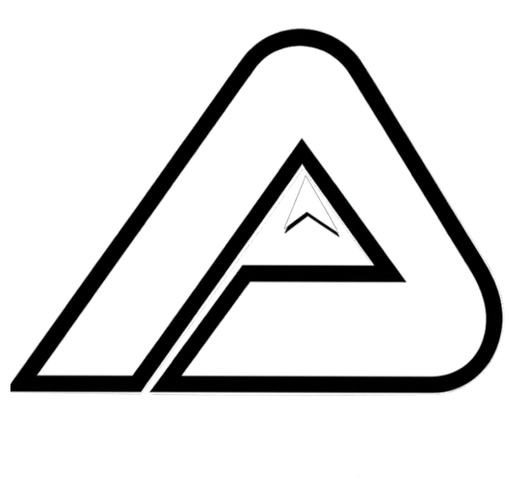

Mono mark
Stamp + favicon. Mountain glyph nested in an A.
Color wordmark
Colorado-flag fill. Hero use only.
ACTZ
Ethnocentric wordmark
Type-only — uppercase, 0.04em tracking, fonts/Ethnocentric-Regular.ttf.